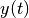
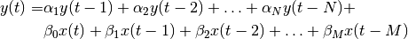
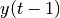
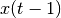
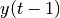
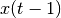

Recurrence Theory¶
Introduction¶
The key idea is that we assume that we are trying to model a sequence of some type. When we say sequence, this could be a time ordered series of numbers or other symbols (like English text). An important aspect is that the ordering (time or position in a sentence) has some meaning and is important to the overall model. For example “the cat is over” evokes a meaning, whereas “eht tac si revo” (reversing each word in place) has no obvious meaning in English, even though the symbols are exactly the same in both sentences.
Recurrent Neural Networks attempt to model the sequential aspects of sentences like the first one above in order to, for example, predict which letter or word typically follows a given sequence. Perhaps in the case above, the full sentence might be “the cat is over there near the fireplace” - if we were designing a completion algorithm for a search engine, it would be useful if the system knew that the completion (a common one) is “there near the fireplace.”
One point should be made in the above. It’s possible that some other type of network could learn a mapping between the sentence “the cat is over” and the next word (or words) without direct knowledge of the sequential nature, just by some measure of the actual symbols present. Depending on the sentence, it might be enough to have a particular group of symbols in any order. In the given case, with the symbols given, there probably aren’t too many sentences you could construct that make sense, so that the jumbled up version of the sentences is equally informative in this case.
Conceptual Model¶
One approach we can use to motivate the theory of RNNs, is to use concepts from the digital signal processing and time series analysis domains. We can think of our RNN as a filter which takes a given input and maps it to a desired output. The process of training the RNN computes the necessary filter coefficients to accomplish this. To be concrete, let us take the following expression as representing our discrete time filter ,

where the  and
and  terms are the filter coefficients (to be determined), the
terms are the filter coefficients (to be determined), the  terms are inputs to the filter at particular times, and lastly
terms are inputs to the filter at particular times, and lastly  and
and  represent the order of the filter (number of terms of each type). As can be seen, we include both terms which are recursive, meaning outputs of the filter at delayed times such as , and non-recursive, meaning inputs to the filter at times such as and .
represent the order of the filter (number of terms of each type). As can be seen, we include both terms which are recursive, meaning outputs of the filter at delayed times such as , and non-recursive, meaning inputs to the filter at times such as and .